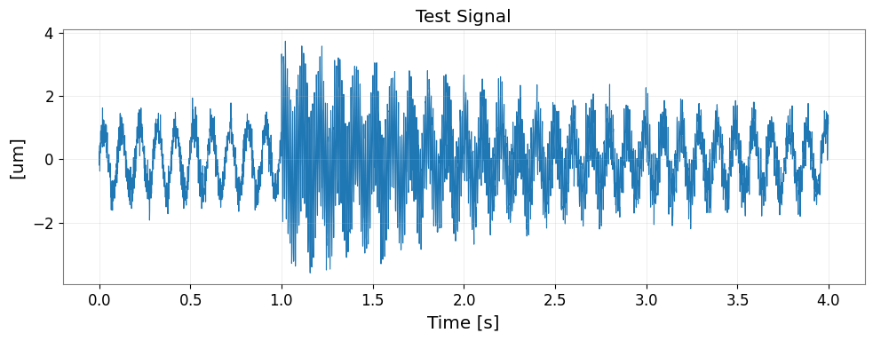
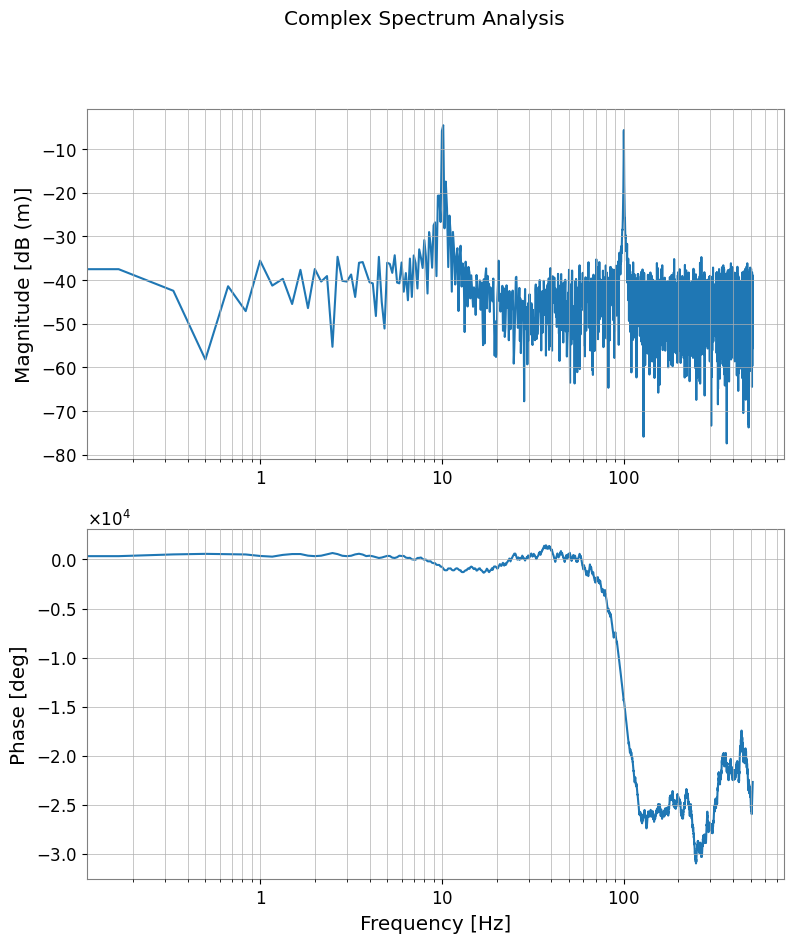
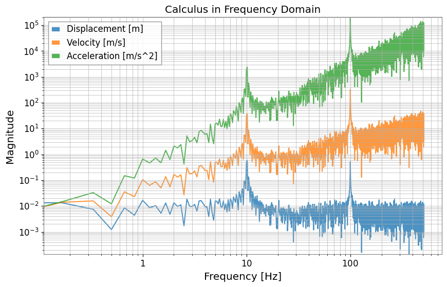
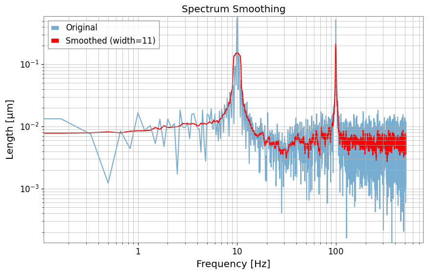
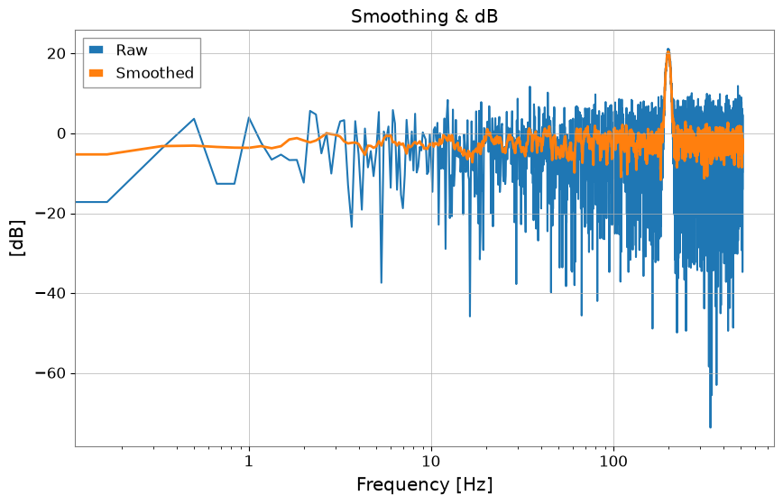
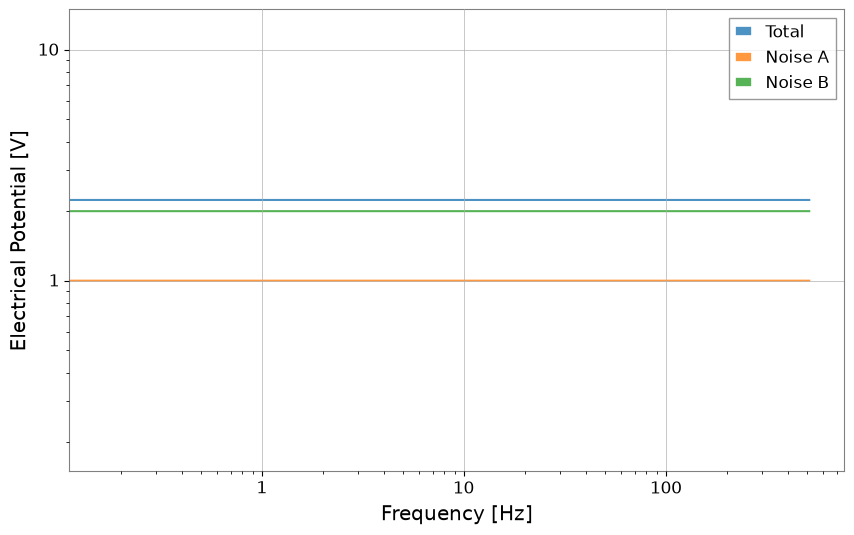

Note
このページは Jupyter Notebook から生成されました。 ノートブックをダウンロード (.ipynb)
[1]:
# Skipped in CI: Colab/bootstrap dependency install cell.
FrequencySeries: 基本

このノートブックでは、gwexpy で拡張された FrequencySeries クラスの新しいメソッドと機能について紹介します。 主に複素スペクトルの扱い、微積分、フィルタリング（スムージング）、および他ライブラリとの連携機能に焦点を当てます。
[2]:
import warnings
warnings.filterwarnings("ignore", category=UserWarning)
warnings.filterwarnings("ignore", category=DeprecationWarning)
import matplotlib.pyplot as plt
import numpy as np
from gwexpy.frequencyseries import FrequencySeries
from gwexpy.plot import Plot
from gwexpy.timeseries import TimeSeries
plt.rcParams["figure.figsize"] = (10, 6)
1. データの準備
まずは TimeSeries から FFT を用いて FrequencySeries を作成します。 ここでは、特定の周波数成分を持つテスト信号を生成します。
[3]:
fs = 1024
t = np.arange(0, 4, 1 / fs)
exp = np.exp(-t / 1.5)
exp[: int(exp.size / 4)] = 0
data = (
np.sin(2 * np.pi * 10.1 * t)
+ 5 * exp * np.sin(2 * np.pi * 100.1 * t)
+ np.random.normal(scale=0.3, size=len(t))
)
ts = TimeSeries(data, dt=1 / fs, unit="um", name="Test Signal")
print(ts)
fig, ax = plt.subplots(figsize=(10, 4))
ax.plot(ts.times.value, ts.value, lw=0.8)
ax.set_xlabel("Time [s]")
ax.set_ylabel(f"[{ts.unit}]")
ax.set_title(ts.name)
ax.grid(True, alpha=0.3)
plt.tight_layout()
plt.show()
# Perform FFT to obtain FrequencySeries (using transient mode with padding)
spec = ts.fft(mode="transient", pad_left=1.0, pad_right=1.0, nfft_mode="next_fast_len")
print(f"Type: {type(spec)}")
print(f"Length: {len(spec)}")
print(f"df: {spec.df}")
TimeSeries([-0.17910034, 0.23602109, 0.12758595, ...,
1.00615337, 1.39844233, 1.12464291],
unit: um,
t0: 0.0 s,
dt: 0.0009765625 s,
name: Test Signal,
channel: None)

Type: <class 'gwexpy.frequencyseries.frequencyseries.FrequencySeries'>
Length: 3073
df: 0.16666666666666666 Hz
2. 複素スペクトルの可視化と変換
位相と振幅
phase(), degree(), to_db() メソッドを使用すると、複素スペクトルを直感的な単位に変換できます。
[4]:
# Convert amplitude to dB (ref=1.0, 20*log10)
spec_db = spec.to_db()
# Get phase (in degrees, unwrap=True for continuity)
spec_phase = spec.degree(unwrap=True)
plot = Plot(spec_db, spec_phase, separate=True, sharex=True, xscale="log")
ax = plot.axes
ax[0].set_ylabel("Magnitude [dB (m)]")
ax[0].grid(True, which="both")
ax[1].set_ylabel("Phase [deg]")
ax[1].set_xlabel("Frequency [Hz]")
ax[1].grid(True, which="both")
plot.figure.suptitle("Complex Spectrum Analysis")
plot.show()

3. 周波数ドメインでの微積分
differentiate() および integrate() メソッドにより、周波数ドメインで微分・積分を行うことができます。 引数 order で階数を指定できます（デフォルトは1）。 これは「変位・速度・加速度」の変換（\((2 \pi i f)^n\) の乗算・除算）を簡単に行うための機能です。
[5]:
# Differentiate from displacement (m) to velocity (m/s) (order=1)
vel_spec = spec.differentiate()
# Differentiate from displacement (m) to acceleration (m/s^2) (order=2)
accel_spec = spec.differentiate(order=2)
# Integration is also possible: acceleration -> velocity
vel_from_accel = accel_spec.integrate()
plot = Plot(
spec.abs(), vel_spec.abs(), accel_spec.abs(), xscale="log", yscale="log", alpha=0.8
)
ax = plot.gca()
ax.get_lines()[0].set_label("Displacement [m]")
ax.get_lines()[1].set_label("Velocity [m/s]")
ax.get_lines()[2].set_label("Acceleration [m/s^2]")
ax.legend()
ax.grid(True, which="both")
ax.set_title("Calculus in Frequency Domain")
ax.set_ylabel("Magnitude")
plot.show()

4. スペクトルのスムージングとピーク検出
スムージング
smooth() メソッドを使用すると、移動平均などによるスペクトルの平滑化が可能です。
[6]:
# Smooth in amplitude domain with 11 samples
spec_smooth = spec.smooth(width=11)
plot = Plot(spec.abs(), spec_smooth.abs(), xscale="log", yscale="log")
ax = plot.gca()
ax.get_lines()[0].set_label("Original")
ax.get_lines()[0].set_alpha(0.6)
ax.get_lines()[1].set_label("Smoothed (width=11)")
ax.get_lines()[1].set_color("red")
ax.legend()
ax.grid(True, which="both")
ax.set_title("Spectrum Smoothing")
plot.show()

ピーク検出
find_peaks() メソッドは scipy.signal.find_peaks をラップしており、特定の閾値を超えるピークを簡単に抽出できます。
[7]:
# Find peaks with amplitude >= 0.2
peaks, props = spec.find_peaks(threshold=0.2)
plot = Plot(spec.abs())
ax = plot.gca()
ax.plot(
peaks.abs(), color="red", marker=".", ms=15, lw=0, zorder=3, label="Detected Peaks"
)
ax.set_xlim(1, 150)
ax.set_xscale("log")
ax.set_yscale("log")
ax.set_title("Peak Detection")
ax.legend()
plot.show()

5. 高度な解析機能
群遅延 (Group Delay)
group_delay() メソッドは、位相の周波数微分から群遅延（信号のエンベロープの遅延）を計算します。
[8]:
gd = spec.group_delay()
plot = Plot(gd)
ax = plot.gca()
ax.set_ylabel("Group Delay [s]")
ax.set_xlabel("Frequency [Hz]")
ax.set_xlim(1, 200)
ax.set_title("Group Delay Calculation")
plot.show()

逆FFT (ifft)
ifft() メソッドは、TimeSeries を返します。mode="transient" で FFT した結果であっても、情報を引き継いで元の長さに戻す (trim=True) などの制御が可能です。
[9]:
# Convert back to TimeSeries with inverse FFT
# mode="auto" reads the transient information from the input FrequencySeries and processes it appropriately
inv_ts = spec.ifft(mode="auto")
red_ts = inv_ts - ts
fig, axes = plt.subplots(2, 1, figsize=(10, 7), sharex=True)
axes[0].plot(ts.times.value, ts.value, label="Original")
axes[0].plot(inv_ts.times.value, inv_ts.value, "--", alpha=0.8, label="IFFT Result")
axes[0].set_title("Time Domain Round-trip (FFT -> IFFT)")
axes[0].legend()
axes[0].grid(True, alpha=0.3)
axes[1].plot(red_ts.times.value, red_ts.value, color="black", label="Residual")
axes[1].set_title("Residual Time Series after IFFT")
axes[1].set_xlabel("Time [s]")
axes[1].legend()
axes[1].grid(True, alpha=0.3)
plt.tight_layout()
plt.show()

6. 他ライブラリとの連携
Pandas, xarray, control ライブラリとの相互変換が追加されています。
[10]:
# Convert to Pandas Series
pd_series = spec.to_pandas()
print("Pandas index sample:", pd_series.index[:5])
display(pd_series)
# Convert to xarray DataArray
try:
da = spec.to_xarray()
print("xarray coord name:", list(da.coords))
display(da)
except ImportError:
print("xarray not installed, skipping DataArray conversion.")
# Convert to control.FRD (can be used for control system analysis)
try:
from control import FRD
_ = FRD
frd_obj = spec.to_control_frd()
print("Successfully converted to control.FRD")
display(frd_obj)
except ImportError:
print("python-control library not installed")
Pandas index sample: Index([0.0, 0.16666666666666666, 0.3333333333333333, 0.5, 0.6666666666666666], dtype='float64', name='frequency')
frequency
0.000000 -0.003123+0.000000j
0.166667 0.012353-0.004988j
0.333333 -0.006870+0.003110j
0.500000 -0.001034-0.000668j
0.666667 -0.008488+0.000366j
...
511.333333 0.008481+0.003599j
511.500000 -0.007365-0.003125j
511.666667 0.000028+0.002203j
511.833333 -0.000457-0.002244j
512.000000 0.001896+0.000000j
Name: Test Signal, Length: 3073, dtype: complex128
xarray not installed, skipping DataArray conversion.
Successfully converted to control.FRD
FrequencyResponseData(
array([[[-3.12334947e-03+0.j ,
1.23534663e-02-0.00498789j,
-6.87025949e-03+0.00310981j, ...,
2.80414796e-05+0.00220303j,
-4.57440083e-04-0.00224441j,
1.89555169e-03+0.j ]]], shape=(1, 1, 3073)),
array([0.00000000e+00, 1.66666667e-01, 3.33333333e-01, ...,
5.11666667e+02, 5.11833333e+02, 5.12000000e+02],
shape=(3073,)),
outputs=1, inputs=1)
7. Python Control Library との連携
制御工学の分野で標準的な control ライブラリの Frequency Response Data (FRD) オブジェクトと相互変換が可能です。 これにより、GWexpyで計測した伝達関数を、制御系の設計や解析に直接利用できます。
[11]:
try:
import control
# Convert FrequencySeries -> control.FRD
# Specifying frequency_unit="Hz" appropriately converts to rad/s internally
frd_sys = spec.to_control_frd(frequency_unit="Hz")
print("\n--- Converted to Control FRD ---")
print(str(frd_sys)[:1000] + "\n... (truncated) ...")
# Plot Bode diagram (control library functionality)
control.bode(frd_sys) # (executable if plotting environment is available)
# Restore control.FRD -> FrequencySeries
fs_restored = FrequencySeries.from_control_frd(frd_sys, frequency_unit="Hz")
print("\n--- Restored FrequencySeries ---")
print(fs_restored)
except ImportError:
print("Python Control Systems Library is not installed.")
--- Converted to Control FRD ---
<FrequencyResponseData>: sys[1]
Inputs (1): ['u[0]']
Outputs (1): ['y[0]']
Freq [rad/s] Response
------------ ---------------------
0.000 -0.003123 +0j
0.167 0.01235 -0.004988j
0.333 -0.00687 +0.00311j
0.500 -0.001034-0.0006681j
0.667 -0.008488+0.0003663j
0.833 -0.00385 +0.002152j
1.000 0.01667-0.0007307j
1.167 0.002796 -0.008178j
1.333 -0.002811 +0.009946j
1.500 -0.005199 -0.001124j
1.667 -0.01275 -0.002985j
1.833 0.004167 +0.002333j
2.000 0.0124 -0.005035j
2.167 0.008729 +0.004025j
2.333 -0.01098 +0.001698j
2.500 0.0007634 -0.001545j
2.667 -0.01832 -0.002318j
2.833 0.009319 +0.003047j
3.000 0.008878 -0.003671j
3.167 0.01097 +0.003723j
3.333 -0.005873 +0.002562j
3.500 -0.01147 -0.01085j
3.667 -0.01246 +0.01016j
3.833 0.01173 -0.003376j
... (truncated) ...
--- Restored FrequencySeries ---
FrequencySeries([-3.12334947e-03+0.j ,
1.23534663e-02-0.00498789j,
-6.87025949e-03+0.00310981j, ...,
2.80414796e-05+0.00220303j,
-4.57440083e-04-0.00224441j,
1.89555169e-03+0.j ],
unit: dimensionless,
f0: 0.0 Hz,
df: 0.02652582384864922 Hz,
epoch: None,
name: None,
channel: None)

8. 求積和 (Quadrature Sum)
直交位相の和を計算する機能です。
[12]:
# Generate noisy data
np.random.seed(42)
f = spec.frequencies.value
noise = np.abs(np.random.randn(f.size))
peak = 10.0 * np.exp(-((f - 200) ** 2) / 50.0)
data = noise + peak
raw = FrequencySeries(data, frequencies=f, unit="V", name="Raw Data")
# Smooth
smoothed = raw.smooth(width=10, method="amplitude")
smoothed.name = "Smoothed"
# Convert to dB
raw_db = raw.to_db()
smoothed_db = smoothed.to_db()
raw_db.name = "Raw (dB)"
smoothed_db.name = "Smoothed (dB)"
plot = raw_db.plot(label="Raw", title="Smoothing & dB")
ax = plot.gca()
ax.plot(smoothed_db, label="Smoothed", linewidth=2)
ax.legend()
plot.show()
plt.close()
# Quadrature Sum (Noise Budget example)
noise_a = FrequencySeries(np.ones_like(f), frequencies=f, unit="V", name="Noise A")
noise_b = FrequencySeries(np.ones_like(f) * 2, frequencies=f, unit="V", name="Noise B")
total = noise_a.quadrature_sum(noise_b)
print(f"Noise A: {noise_a.value[0]}, Noise B: {noise_b.value[0]}")
print(f"Total (Sqrt Sum): {total.value[0]}")
Plot(total, noise_a, noise_b, alpha=0.8)
plt.legend(["Total", "Noise A", "Noise B"])
plt.xscale("log")
plt.yscale("log")
plt.show()

Noise A: 1.0, Noise B: 2.0
Total (Sqrt Sum): 2.23606797749979
